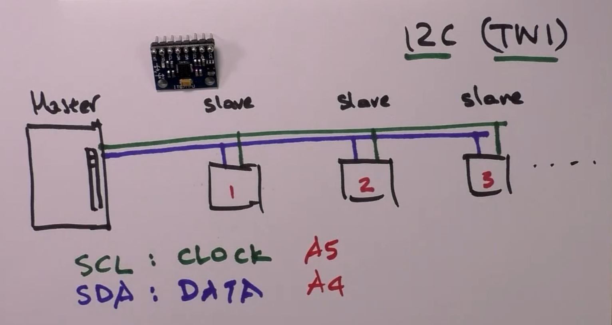

Notes on
| Digital Signal | Voltage | V-Range | Code |
|---|---|---|---|
| 1 | 5v | 3.5v-5v | HIGH |
| 0 | 0v | 0v-3.0v | LOW |
Is an LED an output or an input?
An Output. The Arduino can change the state of an LED by changing the voltage of the digital pin where the LED is connected.
Why is the button an input?
The button's state is changed by the user by pressing it, not the Arduino. The Arduino reads the button's state so that it can determine whether it is pressed or not pressed.
A range between two extremes. Instead of full intensity or no intensity of lets say an LED, whereas in a digital output of the LED will shine at full brightness or none at all, an analog signal will allow the LED to shine at fluctuating levels of brightness in-between. (i.e. Intensity = Dim, Bright..etc )
PWM values can be set from 0 - 255. 255 = 5V value
| Pin (i.e. ~10) | LED |
|---|---|
| 0 | off |
| 255 | ON brightest |
| 50 | ON feint |
| 200 | ON bright |
A device that has a resistor inside, and a knob. As you turn the knob, the middle pin conveys a different voltage depending on the position of knob. Connecting this device to one of the analog pins allows the Arduino to read the voltage in the middle pin and determine what the position of the knob is.
The arduino takes a reading of the current voltage and converts that into a number between 0 -> 1023.
The voltage must be compatible with what the Arduino can handle, so it can only be between 0 and 5v. Anything past that will not be read, and could possibly damage the Arduino.
Turning the knob all the way counter-clockwise will bring the device to 0, turning the knob all the way clockwise will bring the device to 10.
| Potentiometer | Analog Pin (i.e. A0) |
|---|---|
| 0 | 0 |
| 10 | 1023 |
| 5 | 511 |
| 2 | 250 |
On Uno, Nano, Mini, and Mega, pins 0 and 1 are used for communication with the computer. Connecting anything to these pins can interfere with that communication, includ ing causing failed uploads to the board.
You can use the Arduino environment’s built-in serial monitor to communicate with an Arduino board. Click the serial monitor button in the toolbar and select the same baud rate used in the call to begin().
Serial communication on pins TX/RX uses TTL logic levels (5V or 3.3V depending on the board). Don’t connect these pins directly to an RS232 serial port; they operate at +/- 12V and can damage your Arduino board.
To use these extra serial ports to communicate with your personal computer, you will need an additional USB-to-serial adaptor, as they are not connected to the Mega’s USB-to-serial adaptor. To use them to communicate with an external TTL serial device, connect the TX pin to your device’s RX pin, the RX to your device’s TX pin, and the ground of your Mega to your device’s ground. Up to 127 devices can be connected.
I2C is a serial protocol for two-wire interface to connect low-speed devices like microcontrollers, EEPROMs, A/D and D/A converters, I/O interfaces and other similar peripherals in embedded systems. It was invented by Philips and now it is used by almost all major IC manufacturers.
SPI devices communicate in full duplex mode using a master-slave architecture (alternate terminology being main and secondary) with a single master. The master device originates the frame for reading and writing. Multiple slave-devices are supported through selection with individual slave select (SS), sometimes called chip select (CS), lines.
With a Digital to Analog Converter (DAC), you can create analog signals from a digital machine. Such converters make it possible for devices like an MP3 or CD player to produce hi-fidelity audio.